Select Structured Data as the data type for process data from the modeler palette or from the New Data option for the pop-up menu for the model node in the outline and select one of the structured data types defined for the process model as described above on the Structured Data Definition property page.
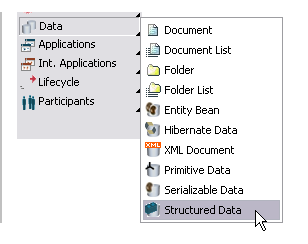
Figure: Create a Data with Type Structured Data.
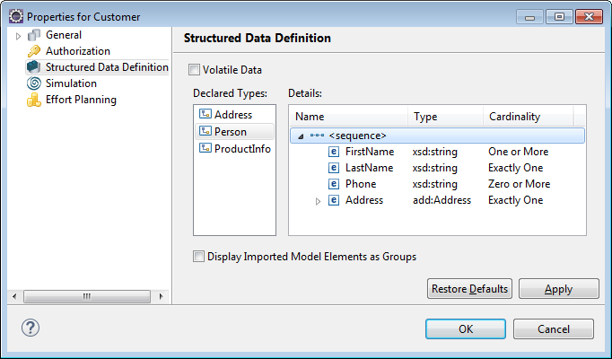
Figure: Property Page of Data Type Structured Data.
A checkbox is provided to mark the structured data as volatile. If you select this checkbox, the data values of the process data are removed from the Audit Trail on process completion. Please refer to section Marking Process Data as volatile of chapter Specifying Data for details on volatile data.
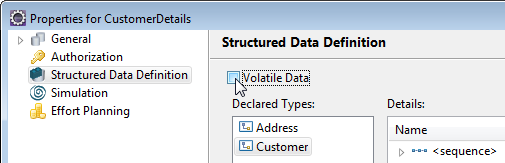
Figure: Marking the Data as volatile
When copying a structured data to another model or project, the structured type is created automatically. In case a structured type with this name already exists, a dialog opens to enter a new name:
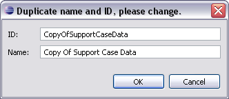
Figure: Enter a New Name
Note that in case you copy structured data types, which use an imported XSD file, between different projects, you have to copy the according XSD file to the target project first. Otherwise a warning dialog opens to remind you to copy this file, e.g.:
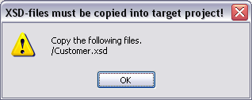
Figure: XSD Copy Warning Dialog
To delete a type, right-click it in the Outline view and select Delete Element. When a structured data type is deleted, which is used in process data, appropriate validation warnings are created, but entries concerning the type are left unchanged.
Data in process data of structured type can be obtained or modified via XPath-like dereferentiation paths. However, defining such dereferentiation paths does not require any XPath skills.
Create IN/OUT data mappings between an activity and a data of structured type as described in chapter Specifying Data Mappings:
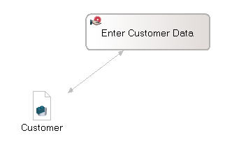
After opening the data mapping dialog
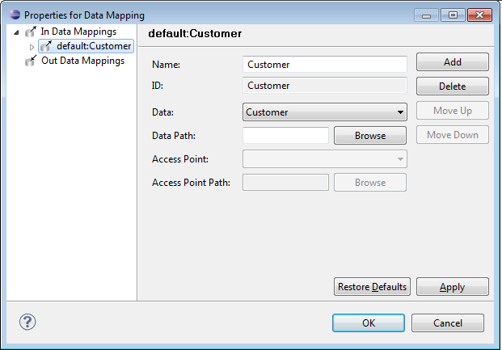
and selecting the Browse button, the data path browser will open and show the top level of the data structure, e.g.
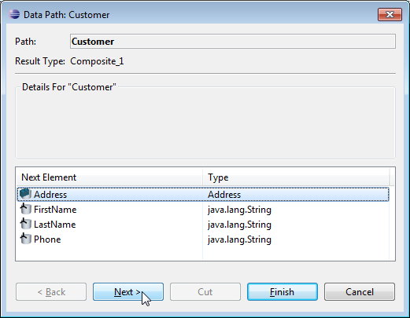
By selecting one cell in the Next Element column, you navigate to this element:
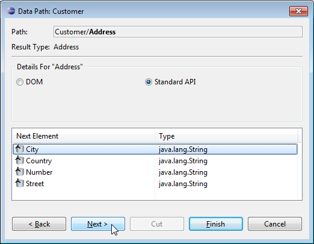
until you have reached an atomic data as shown in the following figure:
Please refer to the section Transforming Structured Data to DOM Objects for a detailed description of the DOM option visible in the above screenshot.
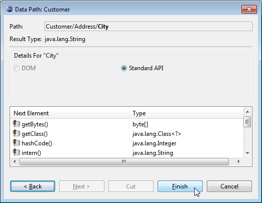
If the selected field has a list type, you need to specify, whether you intend to retrieve the entire list, e.g.:
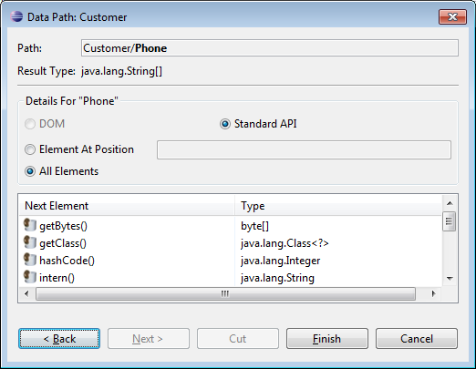
or a single element, e.g.:
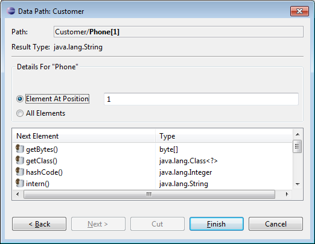
Note, that you can access lists of lists as results of the dereferentiation this way.
The Back and Next buttons allow you to step back and forth in the dereferentiation path.
The path created in the path browser can be stored in the data mapping via the Finish button.
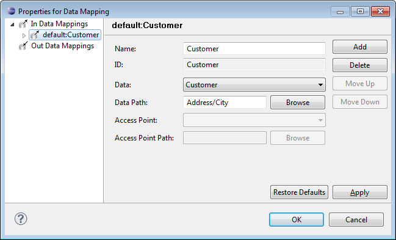
The DOM options, which you can set in the data path dialog, allow you to transform the structured data type to DOM objects. Using DOM() converts the Structured Data into a data of type org.w3c.dom.Element.
If you have an activity and you have connected a data of type structured data to it, you can set these options in the Access path browser on the corresponding property page of the activity (datamappings). For application activities, take care to add the correct return type to your application class methods depending on the used object. The following application class gives an example class, which is called in an application activity using DOM() in a data path:
import org.w3c.dom.Element;
public class DOMApplication {
private Element myElement;
public Element complete(Element aEle) {
System.out.println(aEle);
return aEle;
}
public void setMyElement(Element myElement) {
this.myElement = myElement;
}
public Element getMyElement() {
return myElement;
}
In the application, you can use the methods from this class in as access points. E.g.:
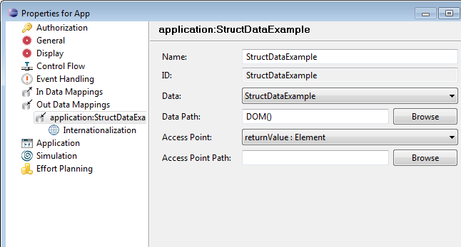
Figure: Using DOM in data path
The semantics of IN and OUT data mappings defined on structured data differ for different dereferentiation paths. The following table describes possible IN- and OUT- data mapping expressions for example schema:
| Direction | Purpose | Example(s) | Java Type | Value contents |
|---|---|---|---|---|
| READ + WRITE | Retrieve/set a value of primitive type | order[1]/qty | int | |
| READ + WRITE | date | java.util.Date | ||
| READ + WRITE | retrieve/set the complete complexType | order[2], order[2]/customer/address[1] | java.util.Map | Contains all fields of order[2], incl. subelements like customer, map key is always the field name. For subelements allowing multiple instances, map value is java.util.List |
| READ + WRITE | retrieve a list of complexTypes | order, order[1]/customer/address | java.util.List | Contains all hits satisfying the expression (all orders/all addresses of the customer from the first order), List elements are instances of java.util.Map. Only the last component of the XPath expression is allowed to have multiple occurrences (maxOccurs>1) |
| READ only | retrieve a list of arbitrary complexTypes | order/customer/address other complex expressions allowed |
java.util.List | Contains all hits satisfying the expression (all addresses of the customer from all orders), List elements are instances of java.util.Map. Only the last component of the XPath expression is allowed to have multiple occurrences (maxOccurs>1) |
Note, that the rule to decide if java.util.List or java.util.Map should be used: if all XPath parts can only return one element, java.util.Map will be used as Java type, otherwise java.util.List. The term "can only return one element" is true, if the element per definition has a maxOccurs=1 or a unique index is used ([last()], ([first()], [NUMBER]).
To use structured data as input or output for WebService Applications, please refer to the section Structured Data as Input and Output of the chapter Integrating Synchronous Web Services for detailed information.
Details on how to use structured data types with Java application types (Java classes, Session Beans) can be obtained from the chapter Structured Data and Java Type Applications of the Programming Guide.
Primitive data retrieved from structured data can be used as descriptors for process definitions:
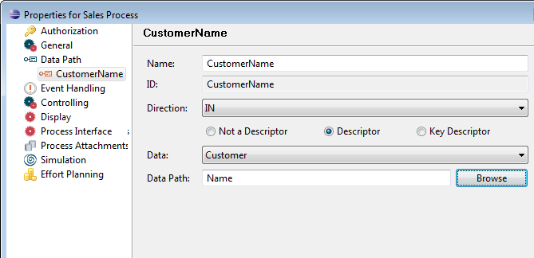
with the same dereferentiation path mechanisms as for Data Mappings of Structured Data:
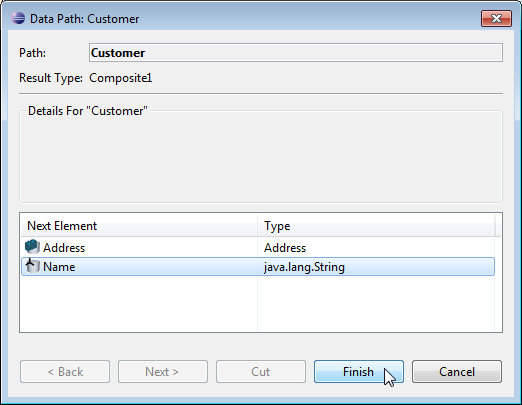
Please refer to the section Descriptors of the chapter Working with Data Paths for general information on the usage of descriptors.
Process data of structured type are stored in the tables in the Stardust Audit Trail Database. The storage layout is optimized for efficient access in queries.
See details about structured data storage in the chapter Structured Data Storage of the Operation Guide.
To set up transition conditions with structured data expressions the Data ID has to be followed the XPATH expression. For example:
<DataID>.a.b.c == <value>
references the element denoted by XPath "a.b.c" in data "DataID".
<DataID>.a.b.c[1] == <value>
references the fist element of the list denoted by XPath "a.b.c" in data "DataID".
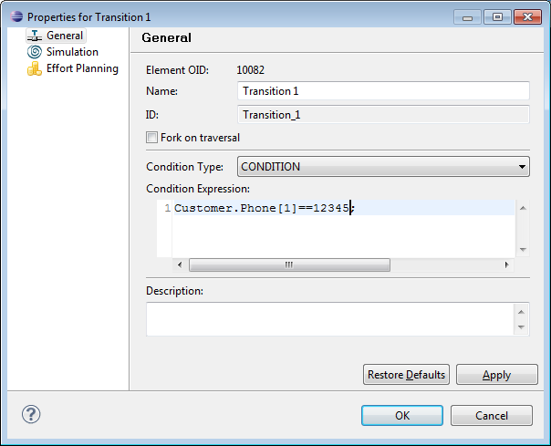
For detailed information on setting transition conditions please refer to the section Setting Transition Conditions in the chapter Working with Transitions.
Some XSD types specified in structured data will be converted to JavaScript types when used for Message Transformation applications or in transition conditions. For Java representations like Map, List or Object, they have to be converted to Java types. Please refer to section Mapping XSD Types of concept chapter Structured Data Types for details.